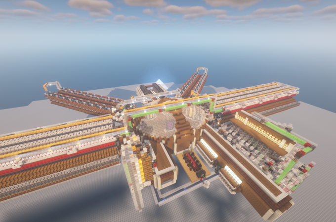

Project / Ongoing
The Spire: Trying to sort every item in the game
Our storage currently consists of about 20 double chests with some sort of category, but it isn’t really a good system as we both put stuff in chests where we don’t think it belongs. So we started designing our new automated storage system.
Read More